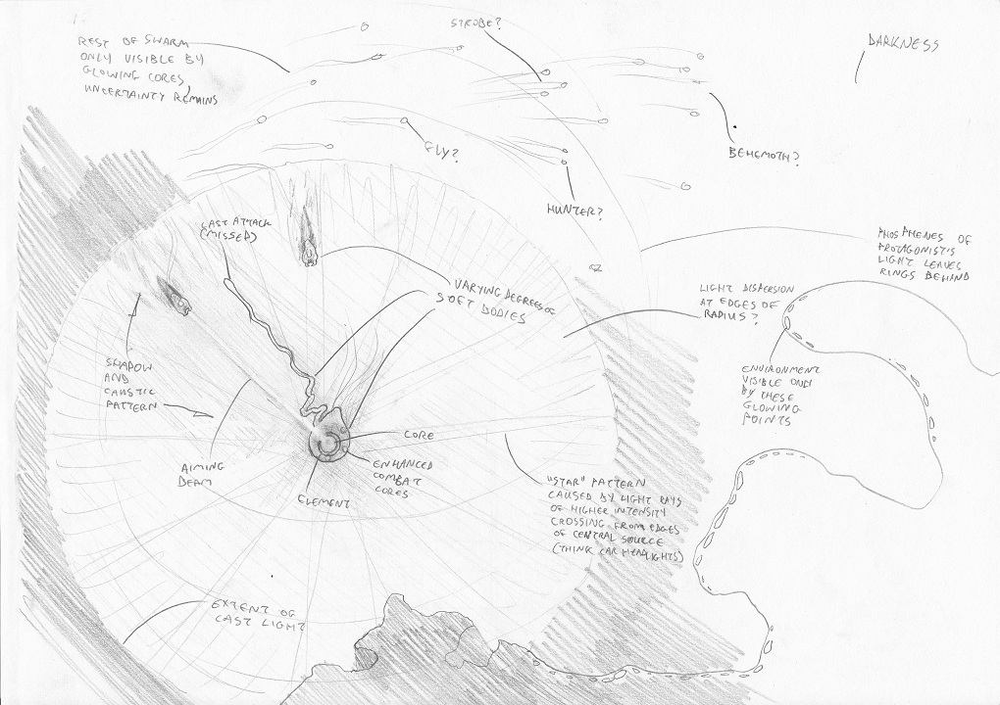
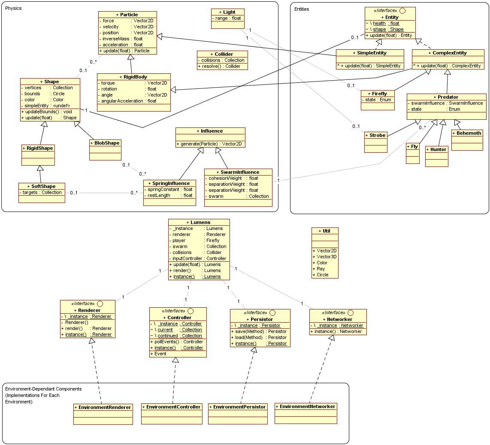

Lumens
Eoghan O'Keeffe
BSc Entertainment Systems
08543453
Contents
- Overview
- Design and Implementation
- Prototype
- References
Overview
Description
The light-emitting protagonist navigates a dark environment
Swarms of bioluminescent troglobites (glowing cave-dwellers) hunt out sources of lightThe player and predators compete for survival
The player must outmanouevre and evade the swarm, while stalking and picking off individuals
Look and Feel
Small light making its way through a pitch-dark environment
Clues in the dark can both help and deceive
"Cell-like" bodies of various kinds - abstract, soft-bodied, translucent
The player should feel tentative and wary in the dark, and panicked and frantic when suddenly overwhelmed
Features and Challenges
Finely-balanced negative-feedback gameplay mechanic
Swarming and related emergent behaviours
Light simulation
Physics engine with collisions and soft and rigid bodies
Dynamic audio - and making it sound interesting and not awful
Procedural level-generation - play to infinity
Platform limitations and costly operations
Multiple platforms
Design and Implementation
Architecture
Modular, MVC architecture
Separation of environment-specific components
Some components still to be designed
Tools
Web technologies and WebGL, with jQuery, Modernizr, and maybe Three.js
Node.js for server-side work
For future platforms, XCode, Visual Studio, and associated tools - may also need a Macbook Pro...
Minimal use of exisiting libraries - developing almost everything from scratch
Development
Adaptive, iterative approach
Core iterations and estimated dates:
- Gameplay mechanisms and basic physics - Christmas
- Basic light simulation - mid-late January
- Advanced light simulation - mid February
- Advanced physics - March
- Further variety in gameplay and antagonists - late April
Development
Further iterations and some optimistic dates:
- Dynamic audio - May 1st
- Stage generation and progression - May 2nd
- Menu system - May 3rd
- Scores - May 4th
- Tightening up and first platform launch - May 5th
- Revisions, changes and subsequent platform launches - end of May...?
Prototype

Review
The prototype suffers from poor physics implementation and lack of clear architecture - needs a solid vector-based physics engine, as opposed to polar coordinate system
Flocking behaviours demonstrate emergence, but are flawed - better tweaking system is needed to debug and balance them
Performance issues are noticeable - needs a space-partitioned data-structure to speed up flocking, collisions, and ray-tracing
Limitations of the prototype have been reached, and it has been deprecated
First Iteration
Currently developing the next version
Grid and now Quad Tree space-partitioning systems have been developed
Better physics implemented (nod to Maths for Games)
Implementing the architecture as designed
DAT.GUI debugging panel installed
References
- Millington, Ian, 2007, "Game Physics Engine Development"
- Reynolds, Craig, 2001(online), "Boids", accessed 10.10.2011, URL: http://www.red3d.com/cwr/boids/
- jQuery, 2011(online), accessed 28.11.2011, URL: http://jquery.com/
- Prototype, 2011(online), accessed 28.11.2011, URL: http://www.prototypejs.org/
- Modernizr, 2011(online), accessed 28.11.2011, URL: http://www.modernizr.com/
- HTML5 Boilerplate, 2011(online), accessed 28.11.2011, URL: http://html5boilerplate.com/
References
- Fabric Engine, 2011 (online), www.fabric-engine.com, URL: http://fabric-engine.com/
- Cabello, Ricardo, 2011(online), accessed 28.11.2011, URL: http://mrdoob.com/122/Threejs
- Node, 2011(online), accessed 28.11.2011, URL: http://nodejs.org/
- Cocos 2D, 2011(online), accessed 28.11.2011, URL: http://cocos2d.org/index.html, http://www.cocos2d-iphone.org/, http://cocos2d-javascript.org/about
- Box 2D, 2011(online), accessed 28.11.2011, URL: http://box2d.org/about/